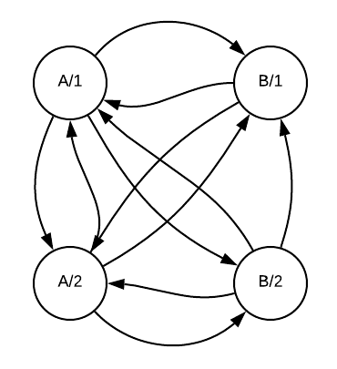

Imperative
Event handlers describe explicit transformations to apply to the DOM
Transitions are hard
Declarative - UI as a pure function of state
{state, view, actions, update}Virtual DOM
class Counter {
constructor(el) {
this.count;
this.counterEl = el.querySelector('.js-count');
this.addButton = el.querySelector('.js-add');
this.subButton = el.querySelector('.js-sub');
this.resetButton = el.querySelector('.js-reset');
this.setCount(0);
this.addButton.addEventListener('click', () => {
this.setCount(this.count + 1);
});
this.subButton.addEventListener('click', () => {
this.setCount(this.count - 1);
});
this.resetButton.addEventListener('click', () => {
this.setCount(0);
});
}
setCount(count) {
this.count = count;
this.counterEl.innerText = count;
}
}// Model
// {
// count: Number
// }
const init = (count) => ({count: count});const view = (state) => h('div.Counter', [
h('div.Counter-count', state.count),
h('div.Counter-buttons', [
h('button.Counter-button', '-'),
h('button.Counter-button', '+'),
h('button.Counter-button', 'Reset'),
]),
]);<div class="Counter">
<div class="Counter-count">${count}</div>
<div class="Counter-buttons">
<button class="Counter-button">-</button>
<button class="Counter-button">+</button>
<button class="Counter-button">Reset</button>
</div>
</div>
const Action = Type({
Increment: [],
Decrement: [],
Set: [Number],
});const update = Action.caseOn({
Increment: (state) => ({count: state.count + 1}),
Decrement: (state) => ({count: state.count - 1}),
Set: (value, state) => ({count: value}),
});const view = (handler, state) => h('div.Counter', [
h('div.Counter-count', state.count),
h('div.Counter-buttons', [
h('button.Counter-button', {on: {click: () => handler(Action.Decrement)}}, '-'),
h('button.Counter-button', {on: {click: () => handler(Action.Increment)}}, '+'),
h('button.Counter-button', {on: {click: () => handler(Action.Set(0))}}, 'Reset'),
]),
]);
const run = (state, element, Component) => {
const newElement = Component.view((action) => {
const newState = Component.update(action, state);
run(newState, newElement, Component)
}, state);
patch(element, newElement);
}